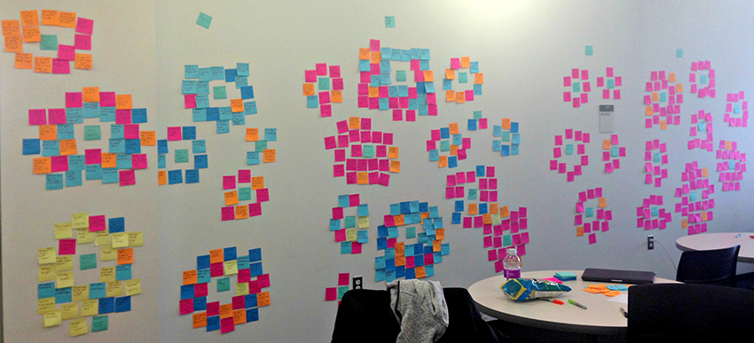
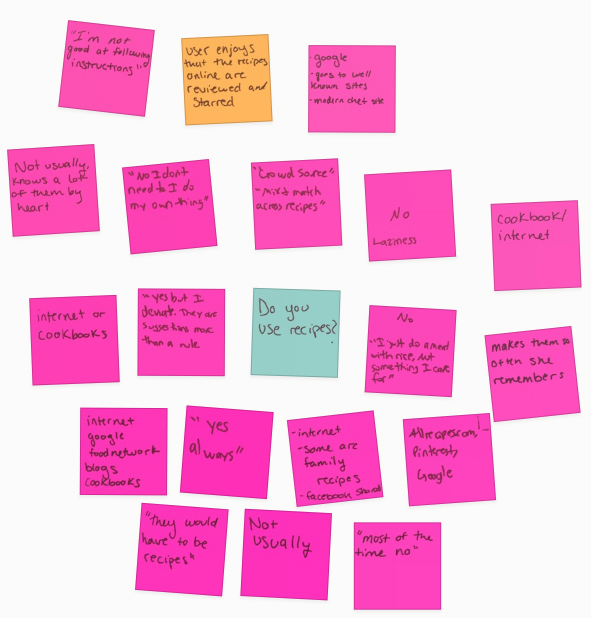

The recipe card app is an aggregator of YouTube recipes. It presents users with recipe cards one at a time, which they can quickly scan, then click or swipe through until they find one which they like. It allows users to quickly find inspiration and visual guidance for recipes which fit their needs and cooking experience level without needing to read lots of detail.
Constraints
This project was a my masters Digital Experience design class, in which we were asked to design a unique solution to a problem we had not yet discovered. Working with one other team member, I conducted user research to find user experience issues for an everyday task. My partner and I analyzed the research. Then we each designed our own unique solution for the problems we found.
Research
Instead of improving a product that already existed, we decided we would design a new solution to fix a common problem. We chose the everyday task of finding recipes online. We kept the task broad so we would not limit our design thinking to one part of this process or a particular piece of software or technology.
Before we began user research, we prepared questions to interview our users. We wanted to get an understanding of their experience looking for recipes online and of their background with regard to technology. Creating effective questions was a challenge as we could not be specific since the task was so broad.
In the end we kept our questions as broad as the task, hoping they would lead us in a good direction to provide good analysis.
Interview Script
Before the task begins
What is your age?
Do you own a computer?
How often do you use a computer?
What kind of computer do you use?
What are some websites that you frequent?
Do you have a smartphone?
What do you typically use your phone for?
What are your favorite apps to use?
Do you cook or bake?
If so, how often?
How do you feel about cooking and baking?
Do you usually use recipes?
If not, why?
If so, where do you usually find your recipes?
How do you usually choose which recipe to use?
Explain the task to find a recipe online
Before you begin, do you have a specific recipe or type of food in mind?
Why did you choose this particular search engine?
Is this the search engine you typically use?
What are you thinking about as you look through the search results?
Why did you click that particular link?
*Additional questions based on users actions*
After the task is complete
Why did you choose that particular recipe?
What did you like about the website you chose?
What was the most difficult part of searching for a recipe online?
What was the easiest part?
Were any parts of the process enjoyable?
Did anything surprise you?
Did you learn anything new?
We recruited people we knew such as family, friends, coworkers, and other students. My partner and I each interviewed 5 people for a total of 10 users. Deciding to interview uses one-on-one was a benefit in two ways:
It allowed us more flexibility on where we could interview our users. We talked to them in environments in which they were already comfortable and available, such as their work or their home.
It saved us time and allowed us to interview more people in less time. Trying to coordinate the schedules of 3 people, ten times during a long weekend is difficult.
We were able to interview a variety of backgrounds in regards to experience with cooking and technology expertise. We combined our results afterwards.
During the Interviews
After explaining to users the process and receiving consent to record their voice and the screen, I started running the recording application, Screencast O Matic. As it was recording, I asked the pre-task questions. Next, I had users jump into the task to "find a recipe online". I did not give them any context or give them instructions beyond this. I let them decide which recipe they wanted to find and how they wanted to go about finding it. I asked why they made the decisions they did and their reasoning for clicking on certain items. I also had them explain out loud what they were thinking. It was interesting to see the different types of users and how they went about the task.
After completing the interviews I watched each video and diagrammed each interview with sticky notes:
The insights and questions I asked are in orange.
User responses to our questions and any notable user quotes are in pink.
Notable user actions are in blue.
Exact search terms that users typed are in yellow.
An Interview Diagrammed with Sticky Notes
My partner and I used the same color scheme to diagram our interviews and diagrammed all ten on a wall:
All interviews diagrammed with Sticky Notes
Our users seemed to fall into the following categories, for which I created personas to reference throughout the remainder of the design process:
The young professional who is building their cooking skills
The foodie who loves to experiment in the kitchen
The busy person who sticks to the basics and eats only to survive
Personas
After analyzing the 512 notes, we could clearly see a common user flow taking place across most users. I designed an infographic to show this common flow and some of my own insights and observations as users completed each step:
Infographic Showing User Flow
Next, we identified more trends by organizing our notes into clusters. We tried our best to be objective during this process and not to jump to conclusions or solutions prematurely. We photographed our affinity diagramming:

Affinity Diagram from User Interviews
Findings
Here are some of our key findings and images of the affinity clusters which support them:
Users feelings towards cooking are generally positive or neutral.
Most users do not regularly use recipes. They usually experiment in the kitchen or cook the meals that are easy and familiar, like spaghetti.

Those users who do use recipes want them to be quick and easy to make with ingredients they have on hand.
Users prefer recipes and websites which have nice imagery.
80% of our users commented that positive ratings and reviews played a major role in deciding if a recipe was worth trying
Designing the Web Application
Given the general user flow and the findings presented above, I decided that I wanted to create an application that would inspire more people to use recipes, and make it easier to pick one with the use of more imagery and minimal text.
My proposed solution is an aggregator of YouTube recipes, to be viewed on a desktop or tablet. It presents users with recipe cards one at a time which they can quickly scan and then click or swipe through until they find one which they like. To get a sense of the idea I have included the final feature maps of the home screen and of a recipe card page below:
Home Screen Feature MapRecipe Card Feature Map
Users search for recipe cards by ingredient and recipe difficulty level. Difficulty level will be based on user ratings. When users try a recipe and rate it, they are asked to specify how difficult the recipe was. Each recipe card has a large still image and the option to play the YouTube video demonstrating how to make it. The recipe cards also have iconography depicting main ingredients and cooking skills needed to make the recipe. In addition, information about cook time, number of steps, and ratings and reviews from others who have tried the recipe are provided. I've included screenshots of the wireframes below:
Home screen w/ featured recipe
Upon arrival to the homepage users are greeted with a featured recipe. They type in an ingredient and choose a difficulty level for the recipe. This caters to those users who like simple recipes as well as those which can handle more complex dishes.
Home screen with main ingredient and difficulty level selected
After deciding on a main ingredient and a difficulty level, the user chooses the "Find your Recipe" button. They are presented with a recipe card based on their choices.
The first recipe card based on chosen ingredient and difficulty level
After viewing the still image, and brief recipe details a user decides if they want to play the video or try another recipe by clicking on the "see a different recipe" arrow button.
The next recipe card based on previously chosen ingredient and difficulty level
The images, iconography and quick bits of information are much easier to scan than reading through a long text-heavy recipes. This allows users to quickly choose recipes which appeal to them. They could use the recipe as inspiration, or watch a video to learn in detail to how to make the recipe. View the final interactive wireframe for the recipe aggregator.